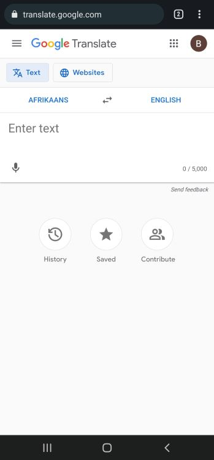
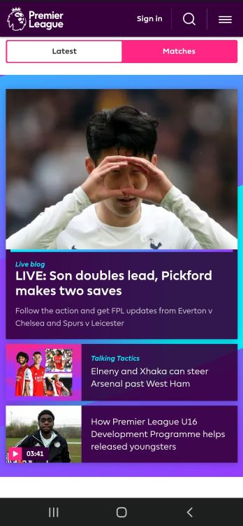
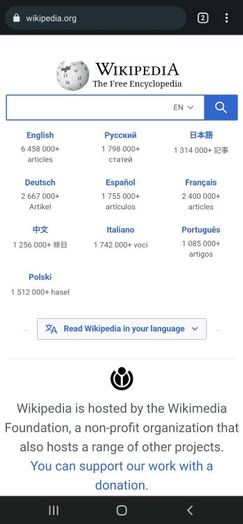

Visual Hierarchy
Google Translate
Visual Hierarchy is shown on Google Translate's website by guiding the user from the top with prompts the user select whether they want to translate text as an imput, or from a website. It then asks what language you would like to translate from, and then finally the main focal point is the place where you input the text.
PARC: Contrast
English Premier League
The English Premier League website demonstrates contrast by having light text imposed on a dark background for each section of the page. Where there is a white background, there is darker text. It also highlights each section by contrasting it against a different color background.
White Space
Wikipedia
The Wikipedia homepage displays the use of whitespace between elements and does not clutter the page with too many unnecessary images or text. each element has its own space and is quickly located just by looking at the page.